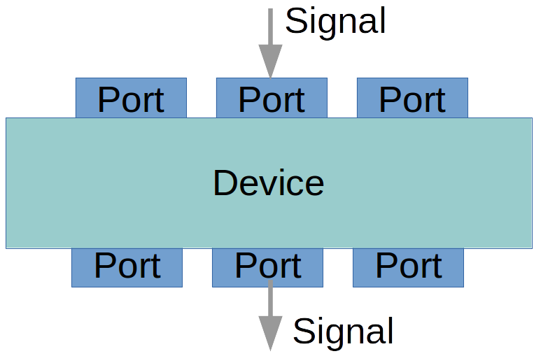

Single Dish Radio Astronomy Software Tools¶
For an overview of SDRAST and the current status please visit https://sdrast.github.io/.
General Purpose Radio Telescope Monitor and Control¶
This is a collection of Python packages for using any fully sterable antenna and receiver as a radio telescope. The requirement is that the all the systems have their own controllers which can be operated with through a Python server using a standard communication protocol (e.g. sockets, USB, IEEE-488, RS-232, SNMP, etc.). The base package submodules provide superclasses for clients of these servers.
It is possible to use an existing monitor and control system as the server, as
long as there is a way for it to accept commands and send responses using a
standard protocol. In this case, the MonitorControl server which provides
the gateway needs to be organized as a set of system servers using the same
interface.
In this diagram, each client has a subclass which is specific to the server to
which it interfaces. The client subclasses which used for a particular observing
session are defined in a Python function called configuration(). There
can be any number of configurations identified by a string context.
Communication between clients and their servers uses the Pyro5 module.
The central server keeps track of what happens to a signal as it enters the telescope (antenna) and progresses to its final digital format for analysis. To achieve this there are three base superclasses.
{kind=link}
Each of the clients in the previous figure is a subclass of Device which
operates on one or more Signalobjects that enter and leave via
Port objects.
Operation¶
The central client works at the command line, using simulators for the antenna,
receiver front end, and signal processing backend. True means that client
is communicating with (simulated) hardware.:
In [1]: from MonitorControl.dss_server import DSSServer
In [2]: cs = DSSServer('WBDC2_K2',
config_args={'hardware': {'Antenna':True,
'FrontEnd':True,
'Backend':True}},
boresight_manager_kwargs=dict(reload=False, dump_cache=False))
In [3]: for device in cs.equipment.keys():
print(device, "is", cs.equipment[device])
Antenna is DSN_Antenna "DSS-43"
FE_selector is None
FrontEnd is K_4ch "K"
Rx_selector is None
Receiver is WBDC2 "WBDC-2"
IF_switch is IFswitch "Patch Panel"
Backend is SAOclient "SAO spectrometer"
sampling_clock is None
In [4]: cs.equipment['Backend'].roachnames
Out[4]: ['roach1', 'roach2', 'roach3', 'roach4']
In [5]: cs.equipment['FrontEnd'].read_PMs()
Out[5]:
[(1, 3.3588105790590205e-08),
(2, 4.000051946785503e-08),
(3, 5.2318605854014335e-08),
(4, 4.906179322988035e-08)]
In [6]: cs.equipment['FrontEnd'].feed_states()
Out[6]: (False, True)
In [7]: cs.equipment['FrontEnd'].set_ND_on()
In [8]: cs.equipment['FrontEnd'].read_PMs()
Out[8]:
[(1, 7.344903928672483e-08),
(2, 8.764367036205836e-08),
(3, 1.1014350435767278e-07),
(4, 1.0521970259070695e-07)]
In [9]: cs.equipment['Backend'].hardware
Out[9]: <Pyro5.client.Proxy at 0x7fe5e5576e50; connected IPv6;
for PYRO:backend@localhost:50004;
owner <greenlet.greenlet object at 0x7fe5f40e8cb0>>
Base Class Modules¶
These modules are all part of the base MonitorControl package.
MonitorControl Package¶
Monitor and Control of DSN radio astronomy equipment
In a very general sense, a configuration consists of Device sub-classes which operate on signals, and Ports at the Device inputs and outputs which transfer signals from one Device to another. Configurations defined for various situations are in the Configurations sub-module.
Devices may add to the properties of a signal. This is a typical sequence.
There are many ways a Device may characterize the data. Most common is power, or something which is proportional to the average of the square of the voltage samples. Cross-product averages may contain polarization information or fringe visibility. Because the output ports and signals must encode what kind of data they contain, a number of standard codes are defined for Device, Port and Signal objects which MUST be used in their names.
Classes:
MonitorControlError(RuntimeError)
Signal(object) -
Beam(Signal) - signal with both polarizations present
ComplexSignal(Signal) - signal with both I and Q components
IF(Signal) - signal with no phase information (I or Q)
Spectrum(Signal) - digitized and usually transformed
Device(object) - generic object with Ports (in and/or out)
GainSection(Device) - amplifiers, attenuators, filters, etc.
Switch(Device) - 1xN, Nx1, 2x2 switches
Port(object) - object which passes a Signal
Observatory(object) - class for describing infrastructure
DeviceReadThread(threading.Thread) - gathers data
The module functions are:
ClassInstance - provides a specific subclass object for a template class
valid_property - forces signal properties to follow a naming convention
show_port_sources - print diagnostic information about ports
link_ports - connect an upstream port with downstream port(s)
oldest_ancestor - finds the top parent of the candidate
find_source - upstream object belong to a specified class
Functions¶
|
This creates an instance of the specified sub-class |
|
|
|
Connect an upstream port with downstream port(s). |
|
finds the top parent of the candidate |
|
Helper method to print diagnostic information about ports. |
|
All entries must have a substr matching an entry in the signal property list. |
Classes¶
alias of |
|
|
Signal class for radiation arriving at a feed. |
|
ComplexSignal class for an RF output from an orthomode or polarizer. |
|
Superclass for anything that receives, processes and outputs a signal. |
|
One thread in a multi-threaded, multiple device instrument |
|
Any device which increases or decreases the power level without changing the frequency and possible splits the signal. |
|
Electrical signal out of a receiver, suitable for detection or digitization. |
|
Error handler for this module |
|
Defines the Observatory class. |
|
Class for a signal port in an Device. |
|
Class for type of signal passing through a Port object. |
|
|
|
Three basic switch types are recognized: “1xN”, “Nx1” and “2x2”. |
Class Inheritance Diagram¶
MonitorControl.Antenna Package¶
Classes¶
|
A subclass of Telescope that can connect to a server that is currently running. |
|
Defines the Telescope class. |
Class Inheritance Diagram¶
MonitorControl.FrontEnds Package¶
Superclass for receiver front ends
Classes¶
|
Device which converts EM radiation to electrical signals. |
Class Inheritance Diagram¶
MonitorControl.Receivers Package¶
Module for controlling and monitoring DSN science receivers
This has the highest Receiver superclass which described the functionality of a generic receiver.
Classes¶
|
Device which converts RF signals to IF signals for detection or digitization |
Class Inheritance Diagram¶
MonitorControl.BackEnds Package¶
Superclass for backend devices
Classes:
Backend(Device) which has private class
DSProc(Device), which has private class
Channel(Device)
Processor(Device)
Functions¶
|
Returns the channel number where a given frequency is to be found. |
|
Create an array of frequencies for the channels of a backend |
|
Do a Gaussian smoothing of the spectrum and then fit a polynomial. |
Classes¶
|
Defines the Backend class, some assembly of DSP hardware. |
|
Data processing device (computer) which provides additional processing |
Class Inheritance Diagram¶
MonitorControl.Configurations Package¶
This package describes equipment configurations used in DSN radio astronomy.
Nested dict ‘cfg’ is keyed the DSN stations, then the DSN receivers and then the polarizations which are available at the inputs of the VLBI DAT matrix switch, which will also be the DTO matrix switch. This dict can edited easily if more IFs become available, simply replacing the appropriate 0 with the input number. If there is no key, that IF does not exist.
References
http://deepspace.jpl.nasa.gov/dsndocs/810-005/302/302C.pdf
Attachment to e-mail from Alina Bedrossian on 03/21/2017 at 09:16 AM gives this assignment:
Antenna Type Switch CDSCC GDSCC MDSCC
BWG1 1 34_S1 24_S1 54_S1
2 34_X1 26_S1 54_X1
3 34_Ka1 15_X1 54_Ka1
BWG2 4 35_X1 25_X1 55_X1
5 35_Ka1 25_Ka1 55_Ka1
BWG3 6 36_S1 15_S1 65_S1
7 36_X1 26_X1 65_X1
8 36_Ka1 26_Ka1 63_X2
70-m 9 43_S1 14_S1 63_S1
10 43_X1 14_X1 63_X1
AUX 11 AUX1 AUX1 AUX1
12 AUX2 AUX2 AUX2
Functions¶
|
Returns the Observatory instance and equipment dict for a context |
Context Modules¶
Antenna¶
MonitorControl.Antenna.DSN Package¶
Classes¶
|
A subclass of Telescope that can connect to a server that is currently running. |
Class Inheritance Diagram¶
MonitorControl.Antenna.DSN.simulator Package¶
Provides a class to act a bit like an NMC
Classes¶
|
antenna simulator |
Class Inheritance Diagram¶
Front Ends¶
MonitorControl.FrontEnds.DSN Package¶
Descriptions of DSN front ends without monitor and control functions
Class Inheritance Diagram¶
MonitorControl.FrontEnds.K_band Package¶
K_4ch - client module for K_4ch front end class
This provides a superclass with code common to both WBDC versions
sub-package implements control and monitoring of the K-band front end using a LabJack
Signals¶
These are the signals monitored or controlled by the LabJack:
FIO IO type description
--- -- ---- -----------
0 0 DO feed 1 load control (pulsed high-low-high)
1 1 DO feed 2 load control (pulsed high-low-high)
2 2 DO amp 1 bias control (pulsed high-low-high)
3 3 DO amp 2 bias control (pulsed high-low-high)
4 4 DO phase-cal (high = True = on)
5 5 DO phase-cal rail (high = True = 4 MHz, low = 1 MHz)
6 6 DI controls LabJack TickDAC
7 7 DI controls LabJack TickDAC
EIO IO type description
--- -- ---- -----------
0 8 DI amp 1 bias on (high = True, low = False)
1 9 DI amp 2 bias on
2 10 AIN -12 V
3 11 AIN +12 V
4 12 AIN +5 V
5 13 AIN +8 V
6 14 AIN Lambda supply
7 15 DO ND control
CIO IO type description
--- -- ---- -----------
0 16 DI feed 1 in load
1 17 DI feed 2 in load
2 18 DI feed 1 on sky
3 19 DI feed 2 on sky
Classes¶
|
The 4-channel downconverter with four inputs for two pols and two feeds. |
Class Inheritance Diagram¶
Receivers¶
MonitorControl.Receivers.DSN Package¶
DSN receiver descriptions with no monitor and control functions
Class Inheritance Diagram¶

MonitorControl.Receivers.WBDC Package¶
WBDC - module for Wide Band Down Converter receiver classes
Overview¶
There are two versions of the wideband down-converter
WBDC1 has two RF sections after the band-splitting filters, one for 22 and 24 GHz, two switch-selectable LOs and one IF section.
WBDC2 has five RF sections and five IF sections.
The sections, as well as feed switching, polarization selection, etc. are basically the same.
Input Switching¶
The first stage of the WBDC allows the down-converter groups to be switched between the two feeds.
Polarization Conversion¶
After the band-selecting RF filters, the linearly polarized signals from each feed can be switched into a quadrature hybrid to be converted to cicular polarizations.
Sideband Separation¶
The down-conversion produces complex outputs (i.e. a pair of signals I and Q). There are switches which can direct each I/Q pair into a quadrature hybrid to convert them to an upper and lower sideband pair.
WARNING! RFsection method _rename_beam is very dependent on the naming convention used, specifically, the length of the names.
Classes¶
|
Base class for a DSN K-band wideband down-converter. |
Class Inheritance Diagram¶
Back Ends¶
MonitorControl.BackEnds.DSN Package¶
Classes¶
|
Class Inheritance Diagram¶
MonitorControl.BackEnds.ROACH1 Package¶
Functions¶
|
Raw ADC count to mV. |
|
If we send the number of the roach instead of the roach name, it will still work. |
MonitorControl.BackEnds.ROACH1.SAOclient Module¶
Python Pyro client for ROACH1 firmware
Notes
This works with a Pyro5 server for ROACH1. It’s relatively independent of the firmware on the ROACH1. There is a server simulator derived from the hardware server for the 32K 1000MHz spectrometer firmware.
Class Inheritance Diagram¶
MonitorControl.BackEnds.ROACH1.simulator Module¶
This simulates a multi-ROACH backend using the TAMS firmare.
The basic program behavior is to create a SAObackend object. This is the
parent for SAOfwif (SAO firmware interface) objects, one for each ROACH. The
SAOfwif class is a subclass of the DeviceReadThread class.
Each SAOfwif object has one or more Channel objects (one for ROACH1,
four for ROACH2) which convert IF signals into 32K power spectra.
Because conversion to 4-channel firmware is pending, a number of SAOfwif
methods should be eventually converted to SAOfwif.Channel methods.
Each SAOfwif object initializes its channel(s) and simulates the ROACH’s
firmware initialization which consists of:
* setting the FFT shift register,
* setting the gain of the RF sections of the ADC channels,
* setting the accumulation (integration) time as a number of accumulations,
* configures the firmware,
* starts the thread, providing it with an 'action' method,
* immediately suspends the thread,
* sets the scan number to 1.
The SAObackend'``method ``start() is invoked by a client. For each ROACH it:
* resumes the thread,
* invokes the client's callback handler to provide the start time,
* sets the number of accumulated spectra to zero.
The SAOfwif method action() increments the number of accumulations and
checks to see if it exceeds exceeds the specified number of accumulations for
a scan. If not it:
* waits for the accumulation to be completed,
* puts the accumulation (spectrum) on the combiner queue.
If the number of accumulations exceeds the specified maximum it:
* suspends the threat,
* sets the number of accumulations to 0,
* increments the scan number.
Note therefore that a scan consists of some specified number of accumulations (integrations) each of which is written as a record, that is, as a row in a 2D numpy array. It is the job of the client to start a new scan which resumes the thread.
Scan and Record Numbers
Scan and record numbers are integers or three digit strings starting with “001”. Each ROACH has its own copy of the scan number.
Record numbers are initialized to 0 when the SAOfwif object is created. It is
incremented each time action() is entered.
Scan numbers are initialized as 0. The The scan numbers are updated in the
SAObackend method action() when a scan is completed. (It’s better to
think of action() as an SAOfwif method provided by the parent
SAObackend.)
Metadata
The SAOfwif object creates an HDF5 file when it is initialised. The firmware
register data which do not change are attrs of the top level of the HDF5
hierarchy. The SAObackend method start(N) will start a new scan of N records
for each ROACH. Scans are at the second level of the HDF5 hierarchy. The attrs
of the scan level of the file are those firmware registers which do not change
during a scan. Each record is written to disk as it is acquired. The attrs of
the record level are the register values which change all the time, and also
time in seconds.
Example
Creating a backend server at the command line:
from MonitorControl.BackEnds.ROACH1.SAOfwif import SAObackend
be = SAObackend("SAO spectrometer",
roachlist=["sao64k-1", "sao64k-2", "sao64k-3", "sao64k-4"])
Functions¶
|
|
|
starts logging, creates a server_cls object, launches the server object |
|
Classes¶
|
subclass with meaningful |
|
A simulated multi-ROACH 32k-channel x 4-IF spectrometer |
|
Class for one ROACH with SAO 32K spectrometer firmware |
|
Pyro server for the SAO back end |
Class Inheritance Diagram¶
Configurations¶
MonitorControl.Configurations.CDSCC Package¶
Configuration information for CDSCC
dict ‘cfg’ is a structure which contains all the receivers and polarization channels of DSN telemetry, tracking and control receivers.
dict ‘feed’ contains all the feed names and positions
References
https://deepspace.jpl.nasa.gov/dsndocs/810-005/101/101F.pdf https://deepspace.jpl.nasa.gov/dsndocs/810-005/302/302C.pdf
Notes on beam efficiency¶
In [1]: from MonitorControl.Configurations.CDSCC import * In [2]: from Radio_Astronomy import *
In [3]: forward_gain(0.766, pi*35**2, 300./8400) Out[3]: 74.63040657733823 In [4]: forward_gain(0.72, pi*35**2, 300./8400) Out[4]: 74.36144384532489
In [5]: antenna_solid_angle(0.766, pi*35**2, 300./8400) Out[5]: 4.3268237639205843e-07 In [6]: antenna_solid_angle(0.72, pi*35**2, 300./8400) Out[6]: 4.603259726615511e-07
The measured HPBW is 0.032 deg
In [7]: beam_solid_angle(pi*0.032/180,pi*0.032/180) Out[7]: 3.5247890878359627e-07
In [8]: beam_efficiency(4.3268237639205843e-07,3.5247890878359627e-07) Out[8]: 0.8146366203374346 In [9]: beam_efficiency(4.603259726615511e-07,3.5247890878359627e-07) Out[9]: 0.7657158833458915
Functions¶
|
Reference: report attached to e-mail from Shinji 05/24/2015 07:26 AM filed in Canberra/Calibration |
MonitorControl.Configurations.GDSCC Package¶
Configurations at the Goldstone Complex
Nested dict ‘cfg’ is keyed the DSN stations, then the DSN receivers and then the polarizations which are available at the inputs of the VLBI DAT matrix switch, which will also be the DTO matrix switch. This dict can edited easily if more IFs become available, simply replacing the appropriate 0 with the input number. If there is no key, that IF does not exist.
References
http://deepspace.jpl.nasa.gov/dsndocs/810-005/302/302C.pdf
The following are from cable tracing and table from Larry (DVP-DTO.jpg):
24SR -> J1A -> 2
14SR -> J2A -> 4
-> J3A ->
-> J4A -> 8
-> J5A -> 10
-> J6A -> 6
26XR -> J7A -> 18
26KaR -> J8A -> 20
-> J9A ->
14XR -> J10A ->
-> J11A ->
-> J12A -> 24